Справочник растений
Полный цикл ухода за культурой — от подготовки семян и посадки до уборки, зимовки и удаления растения. Стикеры культур в календаре ведут сюда.
Огород
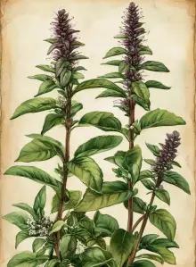
Базилик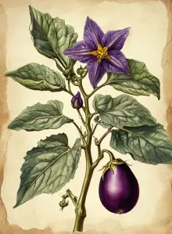
Баклажан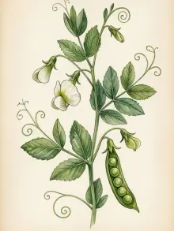
Горох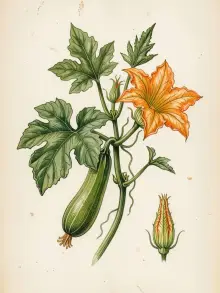
Кабачок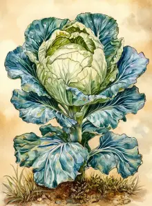
Капуста белокочанная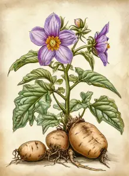
Картофель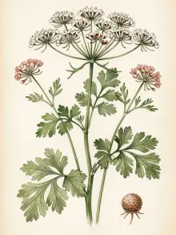
Кинза (кориандр)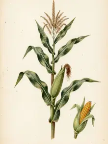
Кукуруза сахарная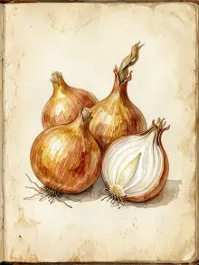
Лук репчатый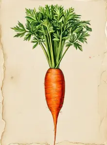
Морковь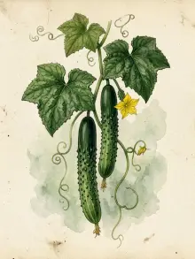
Огурец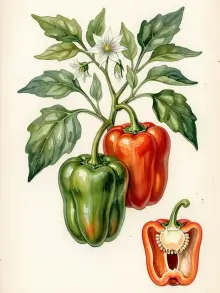
Перец сладкий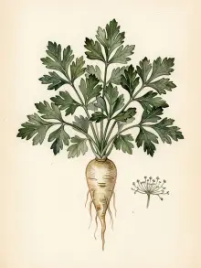
Петрушка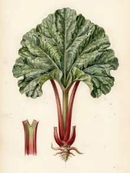
Ревень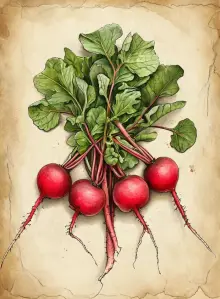
Редис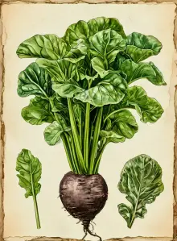
Редька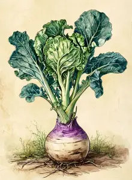
Репа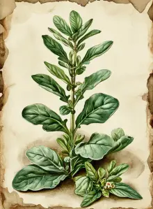
Руккола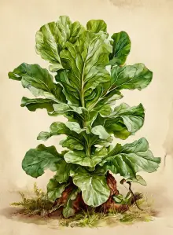
Салат листовой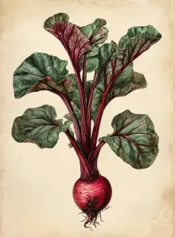
Свёкла столовая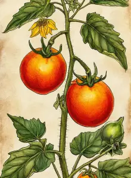
Томат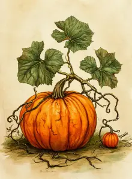
Тыква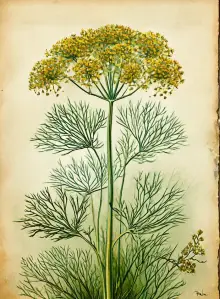
Укроп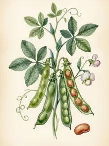
Фасоль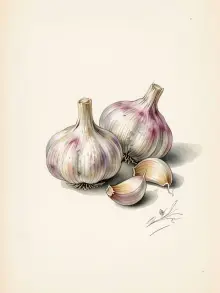
Чеснок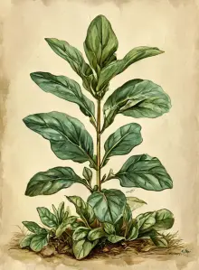
Шпинат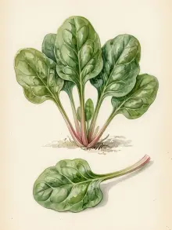
ЩавельСад — ягоды и плодовые
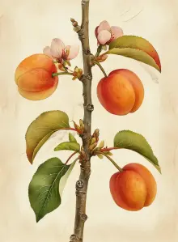
Абрикос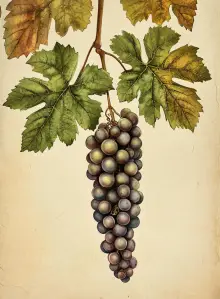
Виноград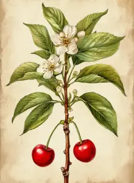
Вишня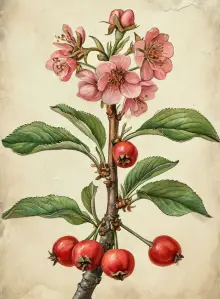
Вишня войлочная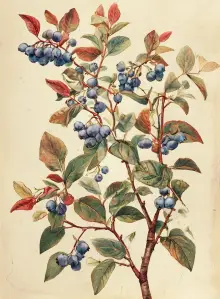
Голубика садовая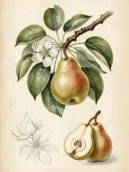
Груша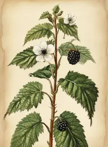
Ежевика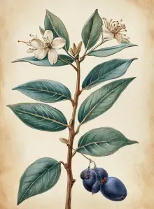
Жимолость съедобная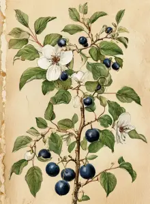
Ирга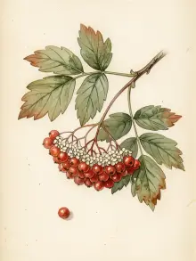
Калина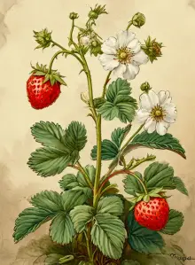
Клубника (садовая земляника)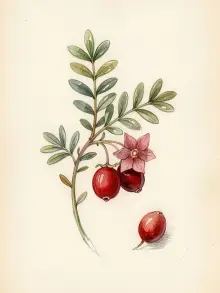
Клюква садовая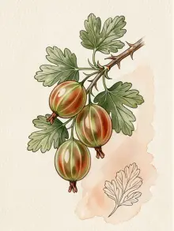
Крыжовник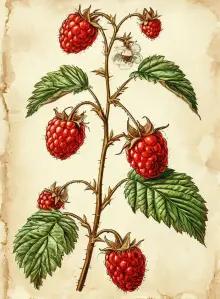
Малина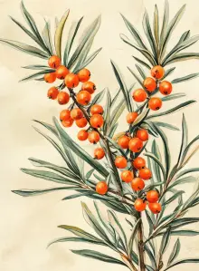
Облепиха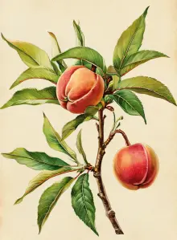
Персик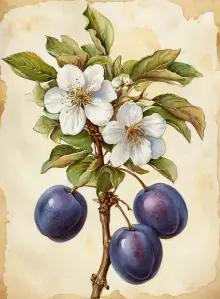
Слива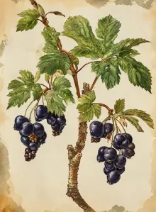
Смородина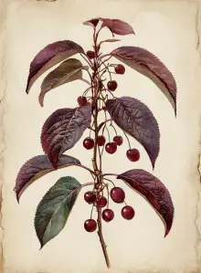
Черёмуха виргинская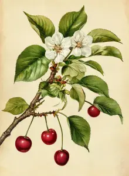
Черешня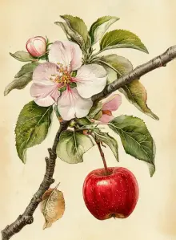
Яблоня